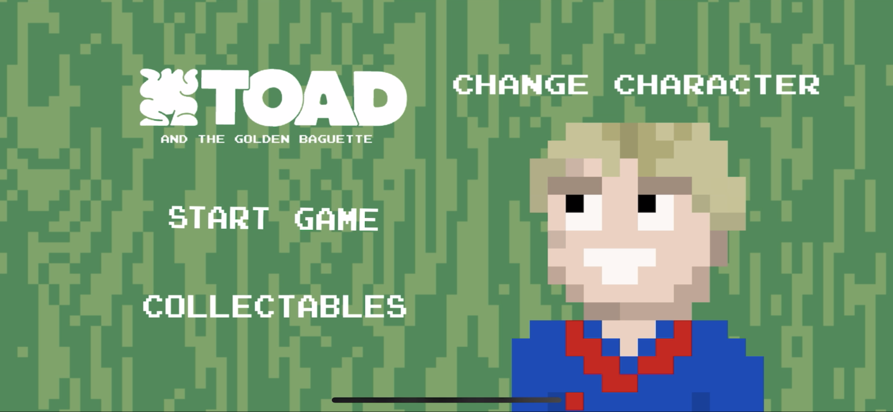
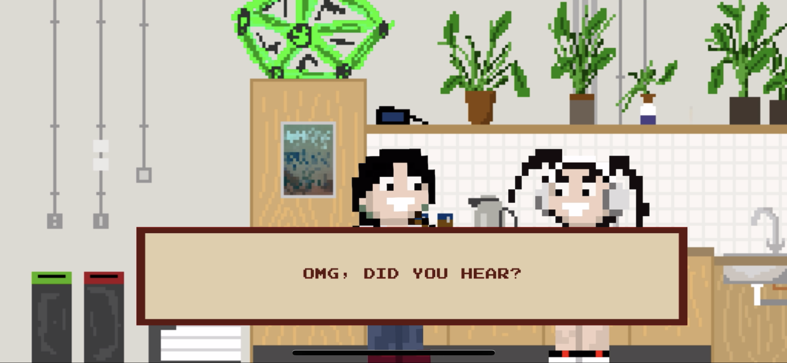
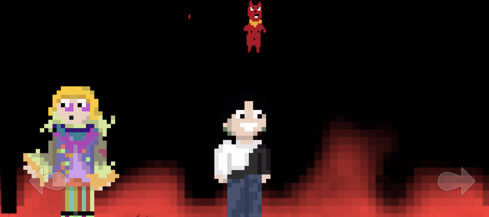
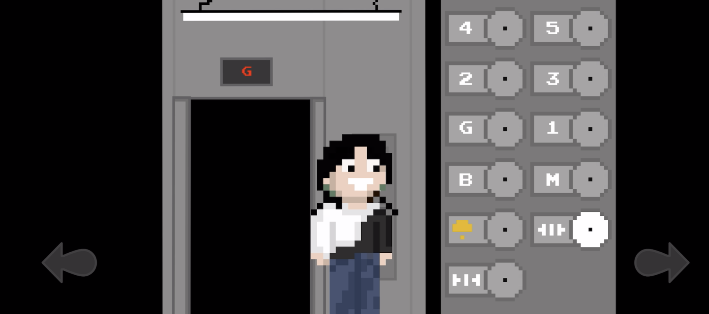

Toad Bakery is an independently owned bakery is Camberwell, South London. Zac Slater is a student at University of the Arts, who worked closely with the staff to develop an explorative open world 2D game that told the story of a students trip from Camberwell College of Arts across Peckham Road and into Toad to collect a brand new “Golden Baguette”. The game was developed in SpriteKit, a framework that uses Swift for iOS app development.
Zac approached me to create the soundtrack and game sound design for “Toad: and the Golden Baguette”, we collaborated in order to create a signature sound that uses synths based on 16-bit video games from the 90s. I referenced a range of video games to get a sound that I felt represented Camberwell, and then combined this with a recent radio set Toad had done on NTS to create an accompanying “Toad Theme”. These were then integrated into the game which is soon to publish onto the Apple App Store.
Gallery Photos


